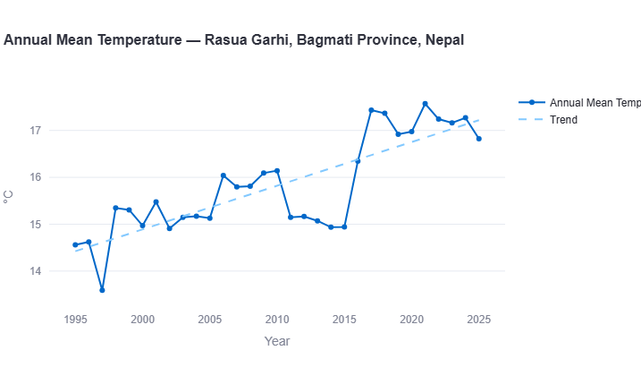
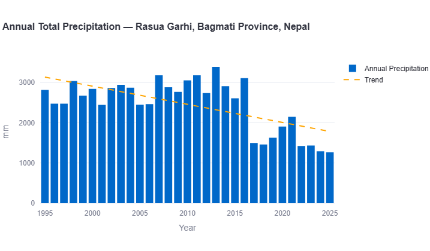
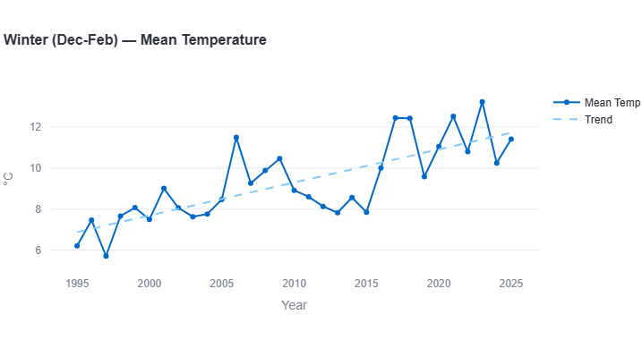
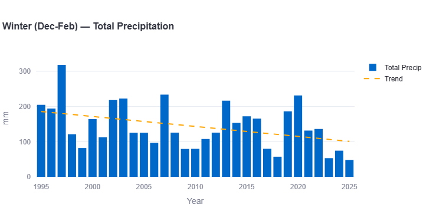
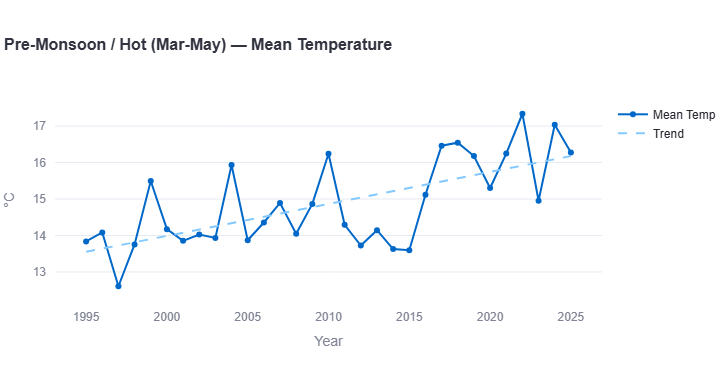
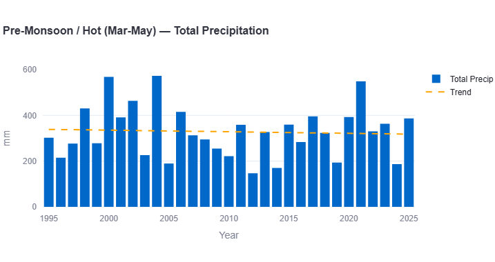
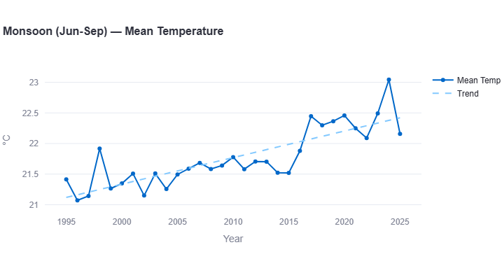
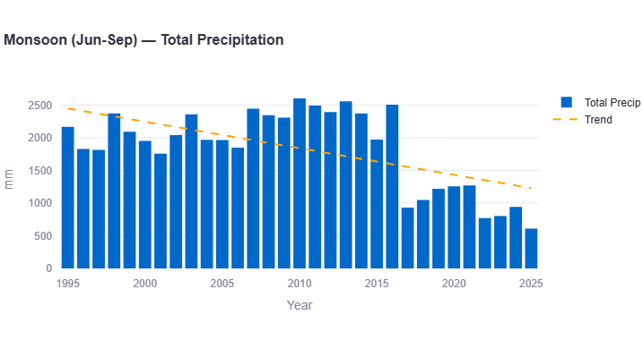
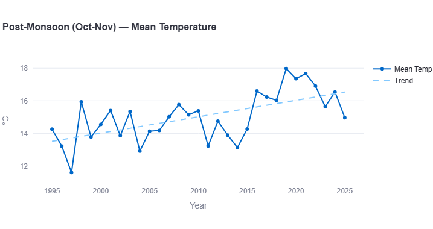
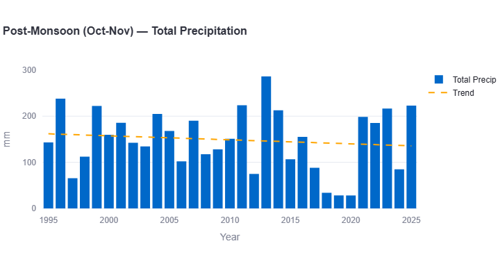

Rasuwagadhi sits at roughly 1,880 meters elevation on the Trishuli River, at the Nepal-Tibet border crossing in Rasuwa District — a fundamentally different setting from every other location in this series so far, all of which are lowland or mid-elevation cities. Using the same 30-year ERA5/ERA5-Land reanalysis methodology applied throughout this site, the data here tells a genuinely distinct story: this is the fastest-warming winter and the steepest rainfall decline recorded anywhere in this series.
Annual Mean Temperature

Annual mean temperature rises from around 14.5°C in the mid-1990s to a trend-line value near 17.2°C by 2025 — with a striking step-change around 2016, when annual means jumped from the 15°C range to consistently above 17°C for most of the following decade.
Key Figure: Warming Rate
Faster than every lowland city in this series except Islamabad (~+0.77°C/decade), and well ahead of Karachi or Lahore (~0.13°C/decade each). High-elevation Himalayan sites like this one are consistent with a broader pattern documented across the region: mountain environments tend to warm faster than the lowlands below them.
Extreme Heat: Days Above Threshold

Zero, across the entire 30-year record. At nearly 1,900m elevation, Rasuwagadhi's climate is well outside the range where extreme-heat thresholds (used for lowland cities like Delhi or Lahore) are ever approached — this is an expected result of elevation, not a data gap.
Annual Total Precipitation

This is the standout finding in this report. Annual rainfall shows a clear, sustained decline — from a trend-line baseline near 2,900mm in the mid-1990s down to roughly 1,800mm by 2025. The pattern isn't gradual: totals stayed mostly in the 2,500–3,400mm range through 2016, then dropped sharply and have mostly stayed in the 1,300–2,100mm range since — including the lowest year on record.
Key Figure: Precipitation Trend
The steepest rainfall decline recorded anywhere in this series — steeper even than Dhaka's decline (~−140mm/decade), which was previously the only clearly drying city studied. Nearly all of this decline traces back to one season: the monsoon (see below).
Seasonal Trend Breakdown
Breaking the data down by season — Winter (December–February), Pre-Monsoon/Hot (March–May), Monsoon (June–September), and Post-Monsoon (October–November) — shows the picture is not uniform: temperature rises fastest in winter, while rainfall's decline is almost entirely a monsoon story.
Winter (Dec-Feb)


Winter shows by far the steepest warming of any season measured anywhere in this series, rising from a trend-line baseline near 6.3°C in the mid-1990s to roughly 11.3°C by 2025.
Key Figures: Winter
Warming rate: approximately +1.67°C per decade (fastest season recorded in this entire series)
Precipitation trend: approximately −30mm per decade
For comparison, this is faster than Islamabad's winter — previously the fastest-warming season documented anywhere in this dataset at +1.23°C/decade. Winter rainfall, meanwhile, is trending down modestly from an already-low base, with a standout wet outlier around 1997 (~318mm).
Pre-Monsoon / Hot (Mar-May)


Pre-monsoon temperatures climb from around 13.8°C to roughly 16.2°C by 2025, with the same 2016-era step-change seen annually.
Key Figures: Pre-Monsoon
Warming rate: approximately +0.8°C per decade
Precipitation trend: approximately flat (−8mm per decade)
Unlike winter and monsoon, pre-monsoon rainfall shows no clear multi-decade direction — a genuinely noisy season with totals ranging from under 150mm to nearly 580mm in different years, but no sustained rise or fall.
Monsoon (Jun-Sep)


Monsoon temperature rises from about 21.1°C to roughly 22.5°C — the slowest-warming season here, similar to the pattern seen in several other cities in this series where the monsoon's cloud cover and rainfall moderate seasonal heat.
Key Figures: Monsoon
Warming rate: approximately +0.47°C per decade (slowest season)
Precipitation trend: approximately −400mm per decade (steepest decline of any season)
This is the season driving nearly all of Rasuwagadhi's annual rainfall decline. Monsoon totals ran mostly 1,800–2,600mm from 1995 through 2016, then dropped sharply — 2017 onward mostly falls in the 600–1,300mm range, including a 2025 total (~620mm) that is by far the lowest monsoon on record.
Post-Monsoon (Oct-Nov)


Post-monsoon temperature rises from around 13.5°C to roughly 16.5°C — the second-fastest-warming season here, behind only winter.
Key Figures: Post-Monsoon
Warming rate: approximately +1.0°C per decade
Precipitation trend: approximately flat (−7mm per decade)
Rainfall in this season stays comparatively stable, with a sharp single-year outlier around 2013 (~285mm) but no sustained multi-decade trend either way.
What This Means for Rasuwagadhi
- Warming here is concentrated in the cold and shoulder seasons, not the monsoon. Winter (+1.67°C/decade) and post-monsoon (+1.0°C/decade) are warming far faster than the monsoon itself (+0.47°C/decade) — a pattern consistent with broader Himalayan warming research, which points to winter and high-elevation seasons as most sensitive to regional climate change.
- The monsoon rainfall decline is the dominant story in the precipitation data. Nearly all of the annual decline (~−367mm/decade) traces back to the monsoon season alone (~−400mm/decade), while other seasons are close to flat.
- Rapid winter warming is a documented driver of glacier retreat and glacial lake growth in the high Himalaya — the general mechanism behind the rising frequency of glacial lake outburst floods (GLOFs) regionally. This dataset shows the warming trend; it does not establish a direct causal link to the August 2026 event, which requires glaciological and hydrological analysis beyond what climate reanalysis data alone can provide.
- The 2016-17 shift deserves more scrutiny than a single dashboard can offer. Both temperature and monsoon rainfall show an abrupt change in level rather than a gradual slope — worth cross-checking against ground station data from Nepal's Department of Hydrology and Meteorology if available, given the added uncertainty of reanalysis data in complex mountain terrain.
How Rasuwagadhi Compares to Kathmandu and the Region
Rasuwagadhi is Nepal's second location in this series, alongside Kathmandu — but the two could hardly be more different. Kathmandu shows an essentially flat-to-slightly-cooling annual trend (~−0.04°C/decade), the most stable of any city studied. Rasuwagadhi, roughly 1,300m higher in elevation and directly on the Tibetan Plateau's southern edge, shows the opposite: one of the fastest annual warming rates in the entire dataset (~+0.9°C/decade) and by far its steepest rainfall decline. The contrast underscores how much elevation and topographic exposure — not just latitude or country — shape climate trends across the Himalaya.
| Metric | Kathmandu | Rasuwagadhi |
|---|---|---|
| Elevation | ~1,400m | ~1,880m |
| Annual warming (°C/dec) | ~−0.04 | ~+0.9 |
| Annual precip trend (mm/dec) | ~+50 | ~−367 |
| Fastest-warming season | Monsoon | Winter |
See the South Asia climate trend report for how this compares against the region's lowland cities.
See Rasuwagadhi's full interactive trends, or compare it against Kathmandu and every other location in this series.
Open the Interactive Dashboard →Data Source & Methodology
All figures in this report are derived from the Open-Meteo Historical Weather API, built on ERA5 and ERA5-Land reanalysis data produced by the European Centre for Medium-Range Weather Forecasts (ECMWF) through the Copernicus Climate Change Service, covering January 1995 through 2025. Trend rates are estimated by reading the linear regression trend line plotted on each chart across the full study period.
Seasonal boundaries follow the standard South Asian meteorological convention: Winter (December–February), Pre-Monsoon/Hot (March–May), Monsoon (June–September), and Post-Monsoon (October–November).
A stronger-than-usual caveat applies here: Rasuwagadhi sits in a narrow Himalayan gorge at ~1,880m elevation, an environment where ERA5-Land's roughly 9km grid resolution has to average over substantial terrain complexity — mountain valleys can carry real microclimates that a single reanalysis grid cell will smooth over. Treat the values here as indicative of the broader trend rather than precise for this exact valley floor, more so than for the lowland cities elsewhere in this series.
Frequently Asked Questions
Is Rasuwagadhi's climate getting warmer?
Yes, and quickly. ERA5-Land reanalysis data from 1995–2025 shows Rasuwagadhi's annual mean temperature rising from around 14.5°C to a trend-line value near 17.2°C by 2025, an estimated pace of roughly +0.9°C per decade — among the fastest annual warming rates recorded in this series.
Which season is warming fastest in Rasuwagadhi?
Winter, by a wide margin — approximately +1.67°C per decade, the fastest seasonal warming rate recorded anywhere in this series, ahead of even Islamabad's winter (+1.23°C/decade).
Is Rasuwagadhi getting more or less rain?
Less — substantially less. Annual total precipitation has declined from a trend-line baseline near 2,900mm in the mid-1990s to roughly 1,800mm by 2025, an estimated −367mm per decade, the steepest rainfall decline of any location studied in this series. Nearly all of the decline is concentrated in the monsoon season.
Did climate change cause the August 2026 Rasuwagadhi flood?
Not directly, and this dataset can't establish that link. The flood was triggered by an ice-and-rock avalanche and a resulting glacial lake outburst on the Tibetan side of the border — a glaciological and geological hazard, not a rainfall event. What this data does show is that Rasuwagadhi's winters are warming faster than anywhere else in this series, which is consistent with the broader, well-documented pattern of Himalayan glacier retreat that researchers link to rising GLOF risk regionally — but establishing a direct causal chain to this specific event requires glaciological and hydrological analysis beyond climate reanalysis data alone.
How does Rasuwagadhi compare to Kathmandu?
Very differently, despite being in the same country. Kathmandu shows an essentially flat annual temperature trend and rising rainfall, while Rasuwagadhi — roughly 1,300m higher in elevation, right on the Tibetan Plateau's southern edge — shows fast annual warming and a sharply declining rainfall trend. The contrast highlights how much elevation and topography shape climate trends across the Himalaya, even within a single country.